Combinatorial Games
Many games involve rolling dice, shuffling cards or spinning wheels, and we can use probability to determine how likely certain outcomes are. This chapter, on the other hand, is about games where there is no ‘luck’ involved: these games are called Combinatorial Games.
One example of a combinatorial game is chess, but it is so complex, with so many different moves and positions, that it is almost impossible to analyse chess using the methods we will develop throughout this chapter. Here is an example of a much simpler game:
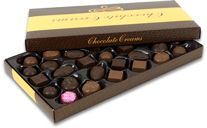There are two boxes with chocolates, and two players eat them alternatingly. At each turn, a player has to eat one or more chocolates, but only from one box at a time. For example, a player could eat three chocolates from box A, but not one from box A and one from box B.
Both players continue, alternatingly eating chocolates, until both boxes are empty. Whoever gets the last chocolate wins.
Here you can try playing this game against the computer. Start by clicking on all the chocolates you want to eat, then click the button to end your turn.
Click to end your turn
After some time you may notice that you always lose. In fact, it it clear from the beginning that the computer always wins unless it makes a mistake. (And computers never make mistakes…) The following sections will explore different methods to analyse combinatorial games, to find winning strategies and to determine whether it is better to go first or to go second.
If you have already noticed a pattern and worked out a winning strategy, the following sections may seem rather complicated for solving a simple game. However the same methods can them be applied to much more complex games.
Tree Diagrams
One method to think about combinatorial games is to make a list of all possible outcomes. This is best done in a tree diagram, where every fork shows all possible choices a player could make. Here is the tree diagram for a slightly simpler version of the game above, with only three chocolates per box.


 
 


 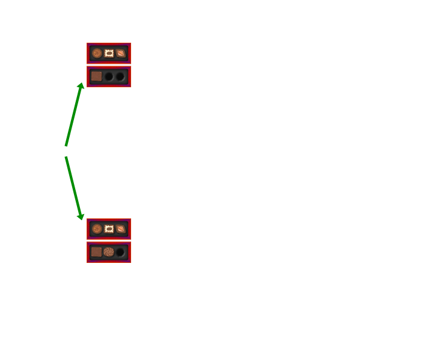
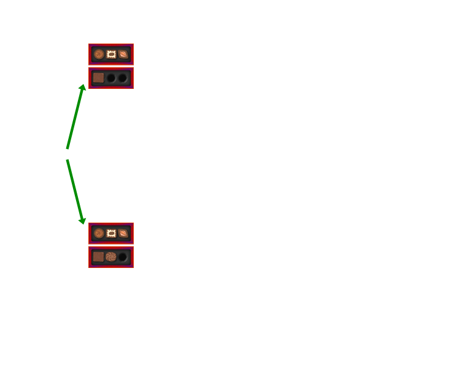  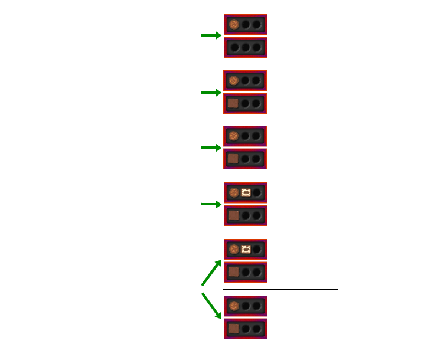 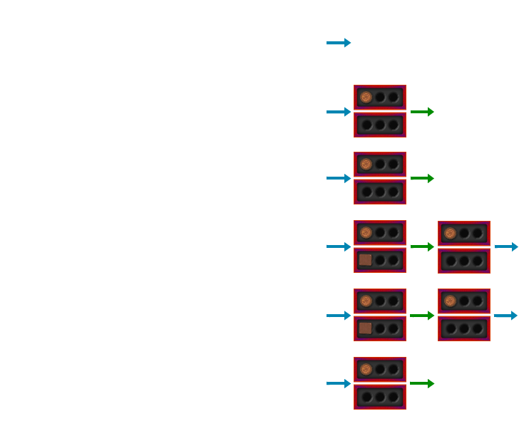
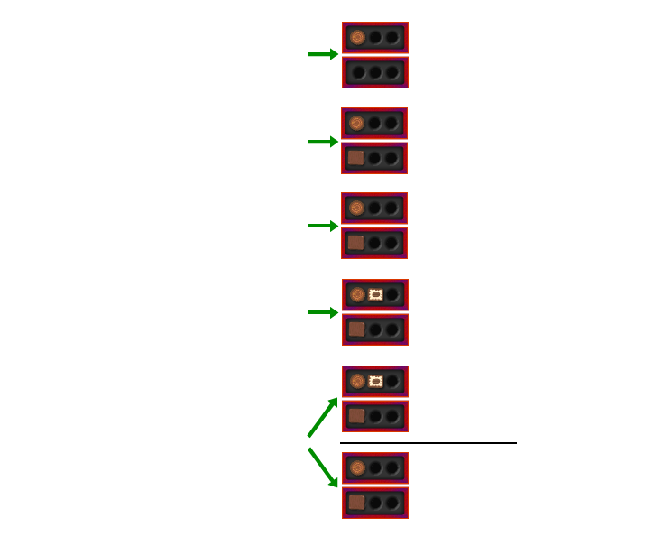 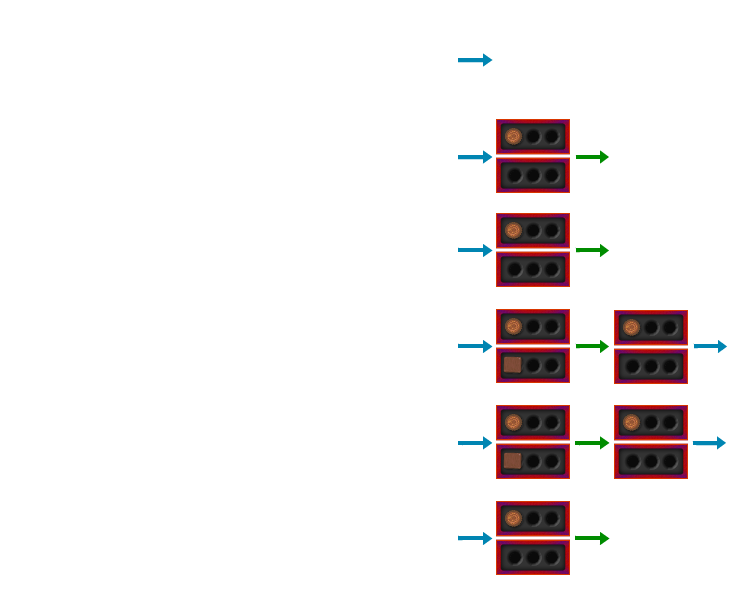This method is useful for simple games, but impractical if we have boxes with many more chocolates. If there are five chocolates per box, we would have to consider more than 10,000 possibilities!
P and N-Positions
In the tree diagram above we had many copies of the same state in different branches of the tree. Instead let us draw a diagram of all the different states, and connect two states with an arrow if a player could move from one to the other. (Remember that you can’t put chocolates back or take chocolates from more than one box.)
We will again highlight various states with different colours, but the colours will have a different meaning than above.

The pattern is quite obvious: all positions along the diagonal, where there are the same number of chocolates in each box, are P-positions. All the other positions are N-position. And this extends to bigger box sizes, including nine chocolates per box like in the game at the beginning of this article. You always made the first move, so you had no chance of winning unless the computer had made a mistake.
A P-position is a position in which the previous player will win (who moved to that position) and a N-position is a position where the next player will win (who moves away from that position). When playing, you want to make sure that you always end your turn on a P-position.
We also observed that from a P-position you can only move to N-positions, and from a N-position you can move to at least one P-position.
| 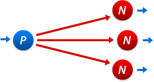 | 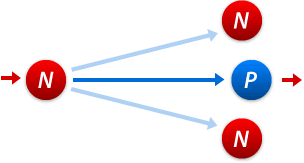 |
| Starting on a P-position, the next player will lose. Therefore the next player must only be able to move to N-positions. | Starting on an N-position, the next player will win. Therefore there must be at least one P-position where the next player can move to. (The game will change if you make a mistake.) |
To analyse a game, we have to start from the end when we know who would have won. Then we can work backwards using the two rules above to classify all positions in the game.
In any game that can be analysed using this method, the outcome is determined from the beginning. If you are unlucky and you are the player destined to lose, there is nothing you can do except hope that your opponent makes a mistake…
The Game of Nim
The game we have been thinking about is a variant of Nim. The winning strategy for only two boxes of chocolates is easy to find, but things get more interesting when we have three or more boxes. Instead of boxes of chocolates we will simply use piles of counters: you are allowed to take as many counters as you want, but only from one pile at a time. We can denote the various states of the game using numbers: for example, (2,5,4) means there are three piles with 2, 5 and 4 counters respectively.
Notice that it doesn’t matter which order the piles are in, or whether there are additional piles with zero counters. For example, (2,5,4) = (5,0,4,2). We have already shown that (1,1), (2,2), (3,3), … are all P-positions, and there is a simple method for determining whether positions with three or more piles are P or N. This method may seem quite unexpected and unrelated to game theory. It arises when you analyse P and N-positions mathematically.
A Nim state (a, b, c, …) is a P-position if the binary digital sum or Nim sum of a, b, c, … is 0. Otherwise it is a N-position. The Nim sum is often written as a ⊕ b ⊕c ⊕ … and can be calculates as shown in the following example.
To find the Nim sum 3 ⊕ 6 ⊕ 7 we proceed as follows:
4 2 1 3 0 1 1 6 1 1 0 7 1 1 1 2 0 1 0
Nim has several important properties:
- Exactly two opponents move alternately.
- The moves and all options are clearly specified by rules, and there are no chance moves.
- There are only finitely many different positions and the game will always come to an end when one player is unable to move. This means that there are no draws and no cycles, which could repeat forever.
- The players have perfect information. Card games often don’t have perfect information because one player doesn’t know the opponents’ cards.
- From any one position of the game both players have the same choice of moves. This is not true for chess, because from any particular position, one player can only move white figures and the opponent can only move black ones.
Games with all these properties are called Impartial Games. Mathematicians discovered that any impartial game is equivalent to a game of Nim with certain box sizes. This means that the P and N-positions match up, and that there are always the same number of possible moves. A winning strategy for any impartial game can be found by converting it into Nim and then using the Nim sum.
 Article on Combinatorial Game Theory
Article on Combinatorial Game TheoryPresented by Philipp Legner at the "Tomorrow's Mathematician's Today" Conference
Non-Combinatorial Games

One of the most captivating combinatorial games: chess
Impartial games are interesting to analyse from a mathematical point of view, but once you have found a winning strategy they are not particularly exciting to play – you know right from the beginning who is going to win.
There are many other combinatorial games. Some, like chess, are so complex that we can’t use methods like the ones above. Chess computers don’t try millions of different possibilities – they play very much like a human being would: analysing the current position and following certain strategies.
Another branch of Game Theory is about situations where people have to make decisions. The outcome depends on your own decision but also on everybody else’s decision – which we don’t know in advance. One example where this happens is economics: companies have to make business decisions and “play” against each other in various markets.
Here are a some interesting situations which can arise in game theory:
Imagine two prisoners are locked in two separate cells of a prison. They are accused of committing a crime together and are questioned individually. Both prisoners are promised to get away if they betray their accomplice, who will gets the full sentence of 10 years.
If both prisoners stay silent, there is not enough evidence so both get a shorter sentence of 1 year. If both betray each other, each is sentenced to 5 years in prison.
The following table shows the four possible outcomes, depending on the actions of Prisoner A and Prisoner B:
| Prisoner A betrays | Prisoner A stays silent | |
| Prisoner B betrays | A: 5 years B: 5 years | A: 10 years B goes free |
| Prisoner B stays silent | A goes free B: 10 years | A: 1 year B: 1 year |
Let us suppose we were Prisoner A and thinking about which action to take: betraying of staying silent.
- If we knew Prisoner B would betray us (first row), betraying would get us 5 years while staying silent would get us 10 years. Thus we should also betray.
- If we knew Prisoner B would stay silent (second row), betraying would get us 0 years while staying silent would get us 1 year. Thus we should betray.
It seems that – no matter what Prisoner B does – betraying will give us a shorter time in jail and thus is the best thing to do.
Prisoner B will be thinking exactly the same and will also betray. Both prisoners will betray each other and will both be sentenced to 5 years in jail.
Notice, however, that if they had cooperated and both stayed silent, they would have managed to force an outcome that would have been better for both of them: just one year each.
John Forbes Nash (* 1928)
In the Prisoners dilemma, the position (A betrays, B betrays) is called a Nash equilibrium: no individual player can improve his/her outcome by changing their strategy.
In 1951, the mathematician John Forbes Nash (* 1928) proved that all “games” of this kind have Nash equilibria (but there can be more than one). These are not necessarily the best outcome for all players (see the Prisoners dilemma), but they are the choices which players will end up making.
John Nash was jointly awarded the 1994 Nobel Prize in Economics for his work, and his biography is depicted in the Academy Award winning movie A Beautiful Mind.
Nash equilibria are of fundamental importance when analysing economic behaviour like that of big companies, as well as wars, arms races or even soccer games. In all these cases, we have to make a decision, taking into account the decisions our opponent(s) could make.
Here is another famous problem in game theory: decision making in marriage.
A couple decides to go out after work. They either go to the Opera (which the wife prefers) or to a football match (which the husband prefers). Their phones are broken and they cannot contact each other where to go.
or
?
The following table shows their respective “gains”. If both go to different places, their gain is 0. If they go to the same place, their gain is either 2 or 3, depending on whether they went to their preferred location or not. (The gain is often called the utility function.)
| Wife goes to Opera | Wife goes to Stadium | |
| Husband goes to Opera | W: 3 H: 2 | W: 0 H: 0 |
| Husband goes to Stadium | W: 0 H: 0 | W: 2 H: 3 |
In this case there are two Nash equilibria: both going to the opera or both going to the stadium. This means that it is much harder to make a decision, often involving psychology and behavioural science (not just mathematics).
If we repeat this “experiment” many times we would observe that husband and wife don’t have a fixed strategy of going to a particular place, but that they employ a mixed strategy: both go to each location with a certain probability.
In this example you can calculate that, optimally, the husband goes to the stadium with probability 3/5 and to the opera with probability 2/5. For the wife, these numbers are swapped.